용접기사 (2013-08-18 기출문제)
1과목: 기계제작법
1. 주물사에서 가스 및 공기에 해당하는 기체가 통과하여 빠져나가는 성질은?
- 보온성
- 통기성
- 반복성
- 내구성
(정답률: 91%)

2. 2차원 절삭의 모델을 창고로 공구의 상면 경사각(α), 전단각(ø)를 알고 있을 때, 전단변형률( shear strain, γ ) 은?
- γ = tan( ø + α ) + cot ø
- γ = tan( ø + α ) - cot ø
- γ = tan( ø - α ) + cot ø
- γ = tan( ø - α ) - cot ø
(정답률: 64%)
3. 주화나 메달(medal) 그 밖의 장신구 등과 같이 문자나 모양을 새기는 판금가공법은?
- 코닝
- 엠보싱
- 스피닝
- 벌징
(정답률: 65%)
4. 침탄법에 비하여 경화층은 얇으나, 경도가 크다. 담금질이 필요 없고, 내식성 및 내마모성이 크나, 처리시간이 길고 생산비가 많이 드는 표면경화법은?
- 마퀜칭
- 화염 경화법
- 고주파 경화법
- 질화법
(정답률: 57%)
5. 컴퓨터를 이용한 자동화 공정계획(CAPP)의 효과를 설명한 것으로 틀린 것은?
- 부품대량생산
- 연속공정
- 계획생산
- 일괄생산
(정답률: 57%)
6. 절삭저항을 3분력으로 분해할 때, 주분력 P1, 이송분력 P2, 배분력 P3 으로 구분한다. 크기 순서가 옳은 것은? (단, 공구는 초경바이트, 피삭재는 저탄소강, 절삭 깊이는 노즈반지름 이내로 가공할 때이다.)
- P1＞P2＞P3
- P1＞P3＞P2
- P3＞P1＞P2
- P3＞P2＞P1
(정답률: 64%)
7. 버니싱 가공에 관한 설명으로 틀린 것은?
- 공작물 지름보다 약간 더 큰 지름의 볼(ball)을 압입 통과시켜 구멍내면을 가공한다.
- 이 가공의 단점은 주로 철과 주철만을 가공할 수 있다.
- 작은 지름의 구멍을 매끈하게 마무리할 수 있다.
- 드릴링 및 리밍 후 실시하는 작업이다.
(정답률: 82%)
8. 각도 측정이나 수평면의 기울기 측정에 사용하는 측정기는?
- 수준기(level)
- 센터 게이
- 텔리스코핑 게이지
- 포인트 마이크로미터
(정답률: 59%)
9. 프레스 가공작업에서 전단력을 감소시키기 위하여 다이 또는 펀치의 면을 경사지게 만드는 것과 관련있는 것은?
- 틈새
- 죔새
- 컬링
- 전단각
(정답률: 55%)
10. 단조 프레스 용량이 50kN 이고, 프레스의 효율이 80%, 단조물의 유효 단면적이 500mm2인 재료를 단조하고자 할 때 단조재료의 변형저항은 몇 MPa 인가?
- 40
- 80
- 100
- 160
(정답률: 75%)
11. 테르밋 반응을 이용하여 철강을 용접하는 방법을 테르밋 용접이라 한다. 이 용접의 특징으로 틀린 것은?
- 용접작업이 단순하며, 기술 습득이 용이하다.
- 용접 기구가 간단하며 설비비가 저렴하고, 또 이동할 수 있다.
- 용접시간이 짧고, 용접 후 변형이 많이 발생한다.
- 용접이음부의 홈은 가스절단 한 그대로도 좋고, 특별한 모양의 홈을 필요로 하지 않는다.
(정답률: 75%)
12. 래핑(lapping) 가공의 장점에 대한 설명이 아닌 것은?
- 가공이 간단하고 대량 생산이 가능하다.
- 가공면이 매끈한 거울면을 얻을 수 있다.
- 기하학적 정밀도가 높은 제품을 만들 수 있다.
- 비산하는 래핑입자가 가공면을 부착하여 강도를 높인다.
(정답률: 74%)
13. 강의 제품을 가열하여 그 표면에 알루미늄을 침투시켜 표면합금층을 만드는 방법은?
- 칼로라이징(colorizing)
- 크로마이징(chroming)
- 실리코나이징(siliconizing)
- 세라다이징(sheradizing)
(정답률: 77%)
14. 버니어캘리퍼스는 일반적으로 아들자의 한 눈금이 어미자의 n-1 눈금을 n 등분한 것이다. 어미자의 한 눈금 간격이 A라고 하면 아들자로 읽을 수 있는 최소 측정값은?
- nA
- A/n
- nA/n-1
- n-1/nA
(정답률: 47%)
15. 전단가공에서 전단저항이 32 N/mm2, 두께가 12 ㎜ 인 강판에 지름 20㎜ 의 구멍을 펀치의 평균속도m/min으로 구멍을 뚫을 때 소요 동력은 약 몇 kW 인가? (단, 이 때 기계효율은 50%이고 보정계수는 k=1로 한다.)
- 2.4
- 4.8
- 6.7
- 13.6
(정답률: 37%)
16. 강을 변태점 이상으로 가열하여 서냉시킨 조직으로 페라이트와 탄화물 (Fe3C) 이 서로 층상으로 배치된 조직으로 경도 HB 180~200, 인장강도 588~785 MPa 정도가 되는 탄소강의 기본 조직은?
- 시멘타이트
- 페라이트
- 펄라이트
- 카보이트
(정답률: 80%)
17. 단체모형, 분할모형, 조립모형의 종류를 포괄하는 실제 제품과 같은 모양의 모형은?
- 현형(solid pattern)
- 회전 모형(sweeping pattern)
- 코어 모형(core pattern)
- 고르게 모형(trickle pattern)
(정답률: 86%)
18. 300톤 이하의 압력으로 다이 또는 맨 드릴에서 금속을 압착하는 공정으로 스플라인, 내치차, 특수형상의 구멍, 베어링의 리테이너 등을 만들 수 있는 것은?
- 호빙(Hobbing)
- 코닝(Coining)
- 엠보싱(Embossing)
- 인트라포밍(Intraforming)
(정답률: 17%)
19. 드로잉(drawing)시 역장력을 가함으로써 얻어지는 효과에 대한 설명이 아닌 것은?
- 다이 수명이 증가한다.
- 드로잉 저항이 감소된다.
- 다이면에 발생되는 압력이 증가된다.
- 가공된 제품의 기계적 성질이 좋아진다.
(정답률: 알수없음)
20. 숏피닝(shot peening)에 대한 설명으로 틀린 것은?
- 숏피닝은 두꺼운 공작물일수록 효과가 크다.
- 강 또는 주철의 작은 알갱이인 숏(shot)을 고속으로 공작물 표면에 충돌시킨다.
- 가공물 표면에 가공경화된 압축잔류응력층이 형성된다.
- 반복하중에 대한 피로한도를 증가시킬 수 있어서 각종 스프링에 널리 이용되고 있다.
(정답률: 79%)
2과목: 재료역학
21. 그림과 같이 길이 3m, 단면적 500mm2인 재료의 윗부분이 고정되어 있고, 이것에 500N의 추를 200㎜의 높이에서 낙하시켜 충격을 준다. 재료의 최대 신장량은 약 몇 ㎜인가? (단, 자중 및 마찰은 무시하고, 재료의 탄성계수는 210GPa이다.)
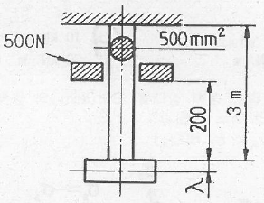
- 2.8
- 3.4
- 2.4
- 3.6
(정답률: 24%)
22. 그림과 같이 직사각형 단면을 갖는 단순지지보에 3kN/m의 균일 분포하중과 축방향으로 50kN의 인장력이 작용할 때 최대 및 최소의 응력은?
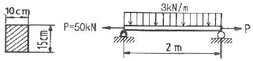
- 4 MPa 인장, 3.33 MPa 압축
- 4 MPa 압축, 3.33 MPa 인장
- 7.33 MPa 인장, 0.67 MPa 압축
- 7.33 MPa 압축, 0.67 MPa 인장
(정답률: 73%)
23. 반지름이 a인 원형 단면봉이 단면에 비틀림 모멘트 T를 받고 있을 때, 이 막대의 표면에 생기는 전단응력 τ의 크기를 구하는 식으로 옳은 것은?
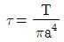
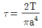
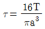
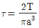
(정답률: 13%)
24. 그림과 같이 단순지지보에서 2kN/m의 분포하중이 작용할 경우 중앙의 처짐이 0 이 되도록 하기 위한 힘 P의 크기는 몇 kN 인가?
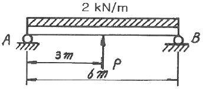
- 6 kN
- 6.5 kN
- 7 kN
- 7.5 kN
(정답률: 67%)
25. 그림과 같은 외팔보에서 굽힘 모멘트의 최대값은?
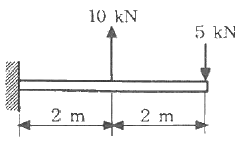
- 5 kN ·m
- 10 kN ·m
- 15 kN ·m
- 20 kN ·m
(정답률: 75%)
26. 그림과 같읕 응력 상태를 모어(Mohr)의 응력원으로 도시하면 어느 것인가? (단, σ2 <σ1 이다.)
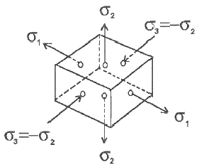
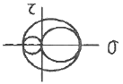
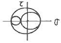
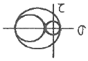
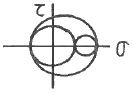
(정답률: 70%)
27. 그림과 같이 두 개의 물체가 도르래에 의하여 연결되었을 때 평형을 이루기 위한 힘 P는 몇 kN 인가? (단, 경사면과 도르래의 마찰은 무시한다.)
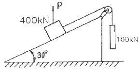
- 100
- 200
- 300
- 400
(정답률: 65%)
28. 가로 x 세로가 30 cm x 20 cm의 사각형 단면적을 갖고 있고 양단이 그림과 같이 고정되어 있는 길이 3m 장주의 중심축에 압축력 P가 작용하고 있을 때 이 장주의 유효세장비는?
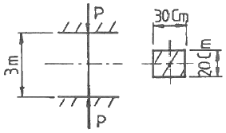
- 78
- 52
- 17
- 26
(정답률: 28%)
29. 길이가 50cm인 외팔보의 자유단에 정적인 힘을 가하여 자유단에서의 처짐량이 1cm가 되도록 외팔보를 탄성 변형시키려고 한다. 이 때 필요한 최소한의 에너지는? (단, 외팔보의 세로탄성계수는 200 GPa, 단면은 한 변의 길이가 2cm인 정사각형이라고 한다.)
- 3.2 J
- 6.4 J
- 9.6 J
- 12.8 J
(정답률: 45%)
30. 그림과 같이 단면의 x축에 대한 단면 2차 모멘트는?
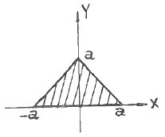
- a4
- a4/12
- a4/6
- a4/4
(정답률: 64%)
31. 단순인장에 의한 항복이 시작될 때의 응력을 Y라 할 때 Mises 항복 조건에 따른 Y를 올바르게 표현한 식은? (단, σ1, σ2, σ3은 주응력을 의미한다.)
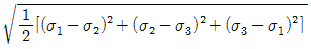
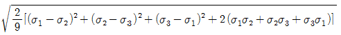
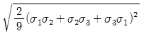
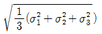
(정답률: 70%)
32. 길이가 L 이며 관성 모멘트가 Ip이고, 전단탄성계수가G인 부재에 토크 T가 적용될 때 이 부재에 저장된 변형 에너지는?
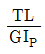
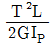
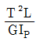
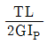
(정답률: 60%)
33. 길이가 55㎜인 환봄 시편의 응력-변형률 선도가 그림과 같으며 항복응력 및 변형률이 각각 σγ = 450 MPa, εγ= 0.006㎜/㎜ 이다. 이 시편에 축하중이 가해져 600 MPa의 응력을 받을 때 하중을 제거하면 (B 지점) 시편에 남게 될 영구 변형률은? (단, 하중을 제거하는 순간의 시편은 초기 대비 11.5㎜ 늘어나 있었다.)
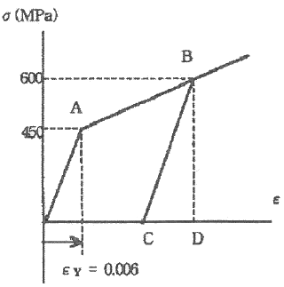
- 0.006 ㎜/㎜
- 0.008 ㎜/㎜
- 0.015 ㎜/㎜
- 0.023 ㎜/㎜
(정답률: 64%)
34. 원형단면축이 비틀림에 의한 전단응력 τ와 τ의 2배 크기인 굽힘에 의한 수직응력 σ 를 동시에 받고 있을 때 최대 전단응력은 수직응력의 몇 배인가?
- 1/√2
- √2
- 1/√3
- √3
(정답률: 47%)
35. 연강 1cm3의 무게는 0.0785N이다. 길이 15m의 둥근 봉을 매달 때 봉의 상단 고정부에 발생하는 인장응력은 몇 kPa인가?
- 0.118
- 1177.5
- 117.8
- 11890
(정답률: 54%)
36. 지름 2.5cm의 연강봉을 상온에서 30°C 높게 가열하여 양단을 고정하여 상온까지 냉각할 때 고정된 벽에서 일어나는 힘은 몇 kN인가?(단, 열팽창 계수 α = 0.000012/°C, E = 210 GPa 이다.)
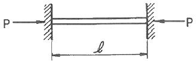
- 17
- 27
- 37
- 47
(정답률: 54%)
37. 그림과 같은 보는 균일단면 부정정보이다. B점에서의 반력 R 를 구하는데 필요한 조건은?
- 지점 B에서의 반력에 의한 처짐
- 지점 A에서의 굽힘모멘트의 방향
- 하중 작용점 P에서의 처짐
- 하중 작용점 P에서의 굽힘응력
(정답률: 70%)
38. 그림과 같은 외팔보의 자유단에 집중하중 P가 작용할 때 자유단에서의 기울기의 최대값(θ)과 처짐의 최대값(δ)은? (단, 보의 굽힘 강성 EI는 일정하고, 자중은 무시한다.)
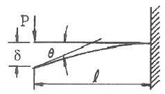
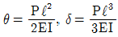
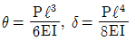
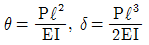
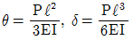
(정답률: 75%)
39. 지름 10cm의 강재축이 750rpm으로 회전한다. 안전하게 전달시킬 수 있는 최대 동력은 약 얼마인가? (단, 허용전단응력 τa= 35MPa 이다.)
- 502 kW
- 539 kW
- 579 kW
- 659 kW
(정답률: 43%)
40. 그림과 같은 보에서 C에서 D까지 균일분포하중 ω가 작용하고 있을 때, A점에서의 반력 RA 및 B점에서의 반력 RB는?
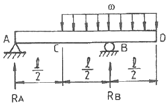
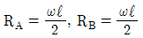
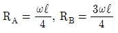
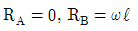
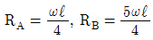
(정답률: 57%)
3과목: 용접야금
41. 다음 조직 중 순철에 가장 가까운 것은?
- 페라이트
- 펄라이트
- 솔바이트
- 마텐자이트
(정답률: 50%)
42. Fe-C 계 상태도에서 공석조직의 C의 양은 몇 %인가?
- 0.3
- 0.8
- 2.3
- 4.3
(정답률: 64%)
43. 용융금속이 응고할 때 응고 온도차에 따라 농도차이를 일으키는 현상은?
- 편석
- 공석
- 포석
- 편정
(정답률: 75%)
44. 탄소강에서 탄소량의 증가에 따른 성질을 설명한 것으로 틀린 것은?
- 비중은 감소한다.
- 열팽창계수는 증가한다.
- 열전도도는 감소한다.
- 항자력은 증가한다.
(정답률: 34%)
45. 순철의 동소체가 아닌 것은?
- α철
- β철
- δ철
- γ철
(정답률: 74%)
46. 제철과정에서 철광석을 환원하는 탈산제로 첨가되며 고온강도를 향상시키는 원소는?
- Ni
- P
- Si
- S
(정답률: 70%)
47. 오스테나이트계 스테인리스강의 용접부는 용접금속에 접한 부분이 조대화되고, 열영향부는 화합물이 석출하여 다음과 같은 현상을 일으킨다. 맞는 것은?
- 황화물의 석출이 일어나 475°C에서 취성을 일으킨다.
- 질화물의 석출이 일어나 입계부식을 일으킨다.
- 탄화물의 석출이 일어나 입계부식을 일으킨다.
- 산화물의 석출이 일어나 경화를 일으킨다.
(정답률: 94%)
48. 가공한 금속을 가열할 때 결정입계의 이동에 의해서 형성되는 쌍정을 무엇이라 하는가?
- 변형쌍정
- 기계적쌍정
- 풀림쌍정
- 소성쌍정
(정답률: 67%)
49. 용접금속의 응력 제거 풀림 균열감수성에 영향을 미치는 원소가 아닌 것은?
- Cr
- Mo
- Mn
- V
(정답률: 19%)
50. 용접 시 저온균열을 방지하기 위한 대책으로 틀린 것은?
- 용접부의 탄소 당량을 높게 한다.
- 냉각속도를 될수록 느리게 한다.
- 저수소계 용접봉을 사용한다.
- 용접봉의 건조를 충분히 한다.
(정답률: 95%)
51. 용접품 후열처리의 주된 목적이 아닌 것은?
- 열영향 경화부의 연화
- 용접부의 고온성능 향상
- 용접부의 내마모성 향상
- 용접부의 수소 방출 효과
(정답률: 46%)
52. 저온 취성(低溫脆性)을 개선하는데 가장 크게 기여하는 원소는?
- 탄소
- 망간
- 니켈
- 유황
(정답률: 28%)
53. S - N 곡선에 대한 설명으로 옳은 것은?
- 항온변태 속도를 나타내는 곡선
- 탄소당량을 도시한 곡선
- 인장시험에서 인장력과 연신율을 나타내는 곡선
- 피로시험에서 반복응력과 반복횟수를 나타내는 곡선
(정답률: 69%)
54. 저온 균열에 속하는 것은?
- 별 균열
- 세로 균열
- 가로 균열
- 비드 일 균열
(정답률: 74%)
55. 강의 뜨임처리(tempering)에 관한 설명 중 맞는 것은?
- 담금질한 강철을 급냉시켜 재질을 경화한다.
- 조직의 변화가 오스테나이트에서 펄라이트로 변한다.
- 불안정한 마텐자이트조직을 A1변태점 이상으로 가열하여 처리한다.
- 담금질할 때 생긴 내부응력을 제거하고 인성을 증가시킨다.
(정답률: 93%)
56. 용접비드 바로 아래의 열영향부에 나타나는 언더크랙(under bead cracking)을 발생시키는 중요 원인은?
- 확산된 산소
- 확산된 수소
- 확산된 질소
- 확산된 아르곤
(정답률: 80%)
57. 용접금속 중 스테인리스강의 특성에 관한 설명으로 맞는 것은?
- 오스테나이트계 스테인리스강은 1000~1100°C로 가열 후에 급냉하면 가공성 및 내식성이 감소다.
- 탄소량을 높게 하면 탄화물의 형성을 억제한다.
- 13Cr강의 담금질 온도는 Cr의 양이 적을수록 높아진다.
- 페라이트계 스테인리스강은 오스테나이트계에 비하여 내산성이 낮다.
(정답률: 59%)
58. TTT 곡선의 now time에 영향을 미치는 요소라 할 수 없는 것은?
- 합금원소
- 인장성질
- 탄소함량
- 결정입도
(정답률: 62%)
59. 연강용접부의 조직변화 중에서 조립균질로서 가열된 온도가 900~1200°C 범위로 인성이 큰 열영향부는?
- 조립부
- 미립부
- 취화부
- 원질부
(정답률: 37%)
60. 용강 중에서 Fe-Si 또는 AI 분말 등의 강한 탈산제를 첨가하여 완전히 탈산한 강괴는?
- 림드강
- 킬드강
- 세미킬드강
- 캡드강
(정답률: 73%)
4과목: 용접구조설계
61. 다음 중 비파괴 시험으로만 구성된 것은?
- 방사선투과 시험, 기계적 시험, 화학적 시험
- 자분탐상 검사, 육안 검사, 와류탐상 검사
- 누수 시험, 금속조직 시험, 육안 검사
- 방사선투과 시험, 액체침투탐상 시험, 금속조직 시험
(정답률: 70%)
62. 용접 변형 중 면외 변형이 아닌 것은?
- 회전변형
- 각변형
- 좌굴변형
- 세로굽힘변형
(정답률: 67%)
63. 용접 구조물을 설계할 때 주의 사항이 아닌 것은?
- 용접선이 교차 하는 곳이 없도록 한다.
- 용접 치수는 강도상 필요한 치수 이상으로 크게 하지 않는다.
- 용접순서는 항상 외각에서 시작하여 중앙으로 향하도록 한다.
- 판면에 직각 방향으로 인장 하중이 작용할 경우에는 판의 이방성에 주의한다.
(정답률: 86%)
64. 용접이음 강도 계산에서 안전율을 n, 허용응력을 σω라면 용착금속의 인장강도 σ는?
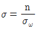
- σ=n∙σω
- σ=2∙n∙σω
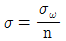
(정답률: 40%)
65. 잔류응력을 경감시키기 위한 용착법은?
- 역변형법
- 비석법
- 살수법
- 억제법
(정답률: 86%)
66. 용접 검사법 중 기계적 시험에 해당되지 않는 것은?
- 경도 시험
- 굽힘 시험
- 피로 시험
- 파면 시험
(정답률: 50%)
67. 용접 후에 해야 할 작업검사 항목 중 틀린 것은?
- 후열처리
- 변형교정
- 균열 및 변형의 유무
- 크레이터의 처리
(정답률: 77%)
68. 강도상 중요한 맞대기 이음에서 용접 시작점과 끝점에 결함과 회전 변형을 방지하기 위해 양 끝에 모재와 동일한 조건의 같은 재질을 연장하여 붙여주는 것은?
- 엔드탭
- 가접
- 억제법
- 가압법
(정답률: 88%)
69. 다음 [그림]과 같이 연강판을 맞대기 용접한 후의 온도와 응력변화에 따른 응력분포에 대한 설명으로 틀린 것은? (단, σx의 Y 축상의 변화에 있어서)
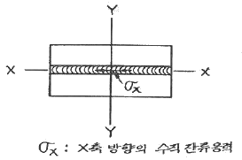
- σx는 Y축과 X축이 만나는 부분의 용착 금속 내에서 인장이다.
- σx는 Y축 상에서 모재부분에서 압축응력이 되는 곳도 있다.
- σx는 전 Y축 상에서 언제나 인장이다.
- σx는 Y축 상에서 인장도 있고 압축도 있다.
(정답률: 75%)
70. 용점 이음효율을 구하는 식으로 맞는 것은?
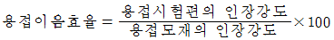
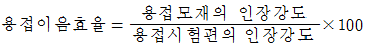
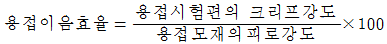
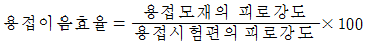
(정답률: 54%)
71. 용접부의 시험 중 용접성 시험법이 아닌 것은?
- 인장시험
- 노치취성시험
- 용접연성시험
- 용접균열시험
(정답률: 50%)
72. 자분 탐상 검사에서 피 검사물의 자화방법이 아닌 것은?
- 코일법
- 관통법
- 펄스 반사법
- 극간법
(정답률: 알수없음)
73. 용착금속의 결함 중 형상 불량이 아닌 것은?
- 용입 불량
- 은점
- 언더 컷
- 오버랩
(정답률: 75%)
74. 용접변형을 경감시키기 위해 용접부를 구속할 때 가장 큰 문제점은?
- 잔류응력이 커진다.
- 잔류응력이 경감된다.
- 용접열량이 1개소에 집중된다.
- 전공급(全供給) 열량이 증가된다.
(정답률: 92%)
75. 용접 흄(fume)에 관한 설명으로 틀린 것은?
- 진폐를 발생시키는 물질을 갖고 있다.
- 호흡기를 자극시키는 물질을 갖고 있다.
- 흄은 피복제가 아크 열로 분해하여 생긴 금속 및 비금속의 산화물이다.
- 흄은 용접 모재의 과열로 생긴 금속의 스패터링이다.
(정답률: 60%)
76. 샤르피 충격시험에서 해머의 무게가 200N, 회전 암의 길이가 1.5m,해머를 낙하하는 높이 h1 대한 각도가 150° 이고 충격시험 후 해머의 2차 높이 h2에 대한 각도가 60° 이었다면 시험편에 흡수된 에너지는 약 얼마인가? (단, cos150° = -0.87, cos60° = 0.5로 한다.)
- 411 N ·m
- 582 N ·m
- 644 N ·m
- 1088 N ·m
(정답률: 50%)
77. 맞대기 용접부에 15 kN의 수직력이 작용할 때 이음부에 발생하는 인장 응력은? (단, 판 두께는 6mm, 용접선의 길이는 250mm로 한다.)
- 7 N/mm2
- 10 N/mm2
- 13 N/mm2
- 19 N/mm2
(정답률: 62%)
78. 다층 용접에 속하지 않는 것은?
- 비석법
- 빌드업법
- 캐스케이드법
- 전진블록법
(정답률: 55%)
79. 인장하중 300 kN이 용접선에 직각방향으로 작용하고 폭이 500mm인 2개의 강판을 맞대기 용접(완전 용입(할 때 그 강판의 두께는 얼마인가? (단, 허용응력 σa = 80 MPa 이다.)
- 3.5 mm
- 5.5 mm
- 7.5 mm
- 9.5 mm
(정답률: 58%)
80. 용접 구조 설계 순서로 옳은 것은?
- 기본계획 → 강도계산 → 구조설계 → 시공도면 → 재료적산 → 절차 사양서
- 기본계획 → 강도계산 → 공도면 → 구조설계 → 재료적산 → 절차 사양서
- 기본계획 → 강도계산 → 구조설계 → 재료적산 → 시공도면 → 절차 사양서
- 기본계획 → 절차 사양서 → 강도계산 → 구조설계 → 시공도면 → 재료적산
(정답률: 63%)
5과목: 용접일반 및 안전관리
81. 피복 아크용접시 피복제의 역할이 아닌 것은?
- 용착금속의 보호
- 용착금속의 탈산정련작용
- 용이한 아크의 발생과 아크의 인정
- 용착금속에 수소의 공급
(정답률: 91%)
82. 고장력강용 저수소계 피복아크 용접봉은?
- E5001
- E5003
- E5000
- E5016
(정답률: 58%)
83. 아크 용접의 자동화에 적용되는 센서(sensor)의 종류가 아닌 것은?
- 터치 센서
- 아크 센서
- 비전 센서
- 압전 센서
(정답률: 55%)
84. 티그(TIG)용접의 텅스텐 전극에 관한 설명으로 틀린 것은?
- 토륨이 함유된 텅스텐 전극은 전자방사 능력이 양호하여 낮은 전류에나 낮은 회로 전압에서도 아크를 발생시키기 쉽다.
- 순수한 텅스텐 전극은 동작온도가 높으므로 접촉이나 금속증기의 발생으로 오손이 생기기 쉽다.
- 토륨에 함유된 텅스텐 전극은 동작온도가 낮으므로 오손은 적으나 가격이 비싸다.
- 순수하나 텅스텐 전극은 정극성으로 알루미늄을 용접할 때 많이 사용된다.
(정답률: 90%)
85. 연강용 피복아크 용접봉의 내균열성이 큰 것부터 작은 순서로 맞는 것은?
- 일미나이트계＞저수소계＞고산화철계＞고셀룰로스계＞티탄계
- 저수소계＞일미나이트계＞고산화철계＞고셀룰로스계＞티탄계
- 저수소계＞고산화철계＞일미나이트계＞고셀룰로스계＞티탄계
- 저수소계＞고산화철계＞고셀룰로스계＞일미나이트계＞티탄계
(정답률: 43%)
86. 산소병의 내 용적이 40L인 용기에 10MPa가 충전되어 있는 가스를 사용하여 프랑스식 팁 200번으로 표준불꽃을 사용하여 용접한다면 몇 시간정도 사용이 가능한가?
- 20시간
- 10시간
- 34시간
- 40시간
(정답률: 74%)
87. 아연 도금한 강판을 용접 할 수 있는 용접봉 계열은?
- 저수소계 및 라임티탄계
- 일미나이트계
- 고산화철계
- 고셀룰로스계
(정답률: 알수없음)
88. 불활성가스 아크절단에서 아크냉각용으로 가장 많이 이용하는 혼합가스는?
- 아르곤과 헬륨의 혼합가스
- 아르곤과 수소의 혼합가스
- 아르곤과 탄산가스의 혼합가스
- 아르곤과 산소의 혼합가스
(정답률: 19%)
89. 용접기의 전원 스위치에 넣기 전에 점거해야 할 사항이 아닌 것은?
- 용접기가 전원에 잘 접촉되어 있는가를 점검한다.
- 케이블의 손상과 결선부의 이완 상태를 점검한다.
- 용접부의 결함을 검사한다.
- 홀더의 파손여부를 검사한다.
(정답률: 94%)
90. 교류 아크 용접기가 아닌 것은?
- 엔진 구동형
- 가동 철심형
- 가동 코일형
- 가포화 리액터형
(정답률: 57%)
91. 용접의 일반적인 특징에 해당되지 않는 것은?
- 자재의 절약
- 공수의 감소
- 성능과 수명의 향상
- 품질 검사의 양호
(정답률: 60%)
92. 산소용기의 색으로 옳은 것은?
- 주황색
- 녹색
- 청색
- 회색
(정답률: 77%)
93. 스테인리스강 중 용접성이 가장 좋은 계통은?
- 마르텐사이트계
- 페라이트계
- 오스테나이트계
- 크롬계
(정답률: 67%)
94. 불활성 가스 아크 용접(inert gas arc welding)에 사용하는 가스는?
- 아르곤, 헬륨
- 산소, 네온
- 질소, 헬륨
- 산소, 질소
(정답률: 93%)
95. 맞대기 저항 용접이 아닌 것은?
- 업셋 용접(Upset welding)
- 플래시 용접(Flash welding)
- 매시 심 용접(Mash seam welding)
- 퍼커션 용접(Percussion welding)
(정답률: 29%)
96. 알루미늄이나 마그네슘 등을 불활성가스 텅스텐 아크 용접할 때 나타나는 현상은?
- 헬륨가스를 사용한 직류 정극성에서 청정작용이 크다.
- 순수 알루미늄보다 알루미늄 산화막(AL2O3)의 용융점이 낮다.
- 아르곤 보호가스로 직류 역극성 전원 선택시 청정작용이 가장 좋다.
- 경합금의 용접에서 고주파 장치가 붙은 직류정극성 전원을 사용한다.
(정답률: 91%)
97. 아크용접에서 감전사고 방지대책이다. 틀린 것은?
- 절연형 홀더를 사용할 것
- 2차 무부하 전압이 높은 용접기를 사용할 것
- 용접기 단자와 케이블 접속부분을 완전 절연시킬 것
- 손상이 없는 적정한 굵기의 케이블을 사용할 것
(정답률: 89%)
98. 가스용접에서 용접봉의 지름 D와 무재의 두께 t와는 어떤 관계가 있는가? (단, 판의 두께가 1mm 이상일 때)
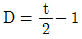
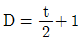
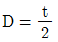
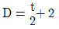
(정답률: 74%)
99. 불활성 가스 텅스텐 아크용접에 대한 설명으로 틀린 것은?
- 직류정극성(DCSP)은 모재의 용입이 얇고 비드 폭이 넓어진다.
- 불활성 가스 중 아르곤이 헬륨보다 청정작용 효과가 크다.
- 경합금의 용접에서는 고주파장치가 붙은 교류 전원이 사용된다.
- 직류역극성(DCRP)은 청정작용은 있으나 전극봉이 녹아내리는 현상이 발생한다.
(정답률: 50%)
100. 중력을 이용한 피복 아크 용접법은?
- 그래비티(gravity) 용접
- 이행형 아크(transferred arc) 용접
- 비 이행형 아크(non trasferire arc) 용접
- 반 이행형 아크(semi trasferire arc) 용접
(정답률: 93%)